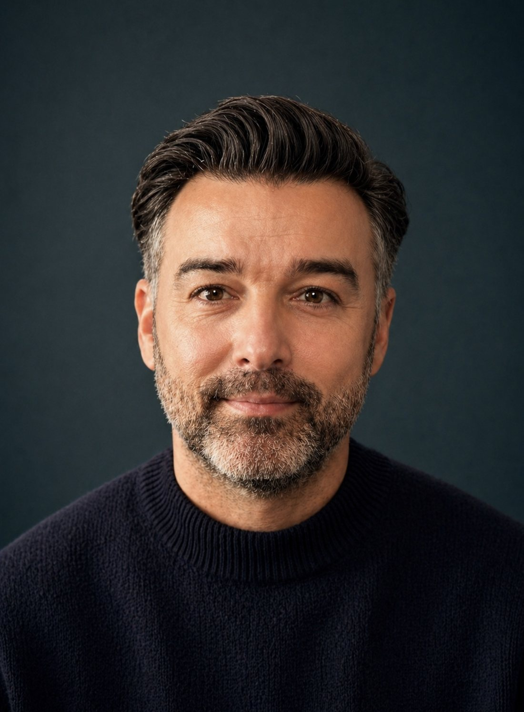

About
Sixteen years of design and creative leadership.

I’m a Senior Design Director. I started out designing watches and accessories at Fossil, then spent sixteen years at Randa Apparel & Accessories, the world’s largest men’s accessories company, working my way up from Assistant Designer to Senior Design Director.
At Randa I led design for 11+ licensed brands: Levi’s, Calvin Klein, Tommy Hilfiger, Columbia, Cole Haan, Tommy Bahama, Dickies, Kenneth Cole, Dockers, Red Wing and Guess. I also led private label for Target, Walmart, Macy’s, Costco, Kohl’s and JCPenney.
The part of the job I’m best at is keeping the brand, the customer, the team, the calendar and the cost in view at the same time. I bring merchandising and product development in early so design decisions hold up commercially. I also write down how we work, so a team can run a season well without waiting on me.
I studied industrial design, so I’m as comfortable talking construction, hardware and factory timelines as I am directing a photo shoot. I’ve worked directly with factory partners in China, Taiwan and India, and I led our move to 3D sampling and our first generative AI tools.
Experience
Assistant Designer to Senior Design Director
Randa Apparel & Accessories
Senior Design Director, Men’s Leather & Accessories
Design strategy, product development and brand management for Randa’s largest category: 11+ licensed brands plus private label for Target, Walmart, Macy’s, Costco, Kohl’s and JCPenney. Manage 6 direct reports and work with 20+ partners across product development, sourcing, merchandising, sales, marketing and sustainability.
Randa Apparel & Accessories
Design Director
Designed and directed men’s leather goods and accessories across licensed lines and retail channels. Tightened the loop between design, merchandising and sales to cut costly late-stage revisions.
Randa Apparel & Accessories
Senior Designer
Conceived, named and co-led Damen + Hastings, Randa’s first owned brand, from concept to a national launch at Kohl’s, including a Made-in-USA collaboration with Pintrill. Started Randa’s first leather sustainability work before a formal ESG program existed.
Randa Apparel & Accessories
Designer
Owned the design process from concept and material selection through factory handoff and production approval.
Randa Apparel & Accessories
Assistant Designer
Supported senior designers across licensed brand programs: construction, material sourcing, trend research, and work with vendors and sales.
Fossil Group
Assistant Designer
Watch and accessories design at a global brand: product development, materials and manufacturing.
What I bring
Design direction
- Seasonal direction across multiple brands
- Trend research and trend books
- Presenting to licensor brand teams for approval
- Lookbook and product photography
Team leadership
- 6 direct reports, 20+ cross-functional partners
- Design guides and training toolkits for new designers
- Hiring and onboarding, including a China-based 3D designer
- Design reviews across US and overseas offices
Product & sourcing
- Industrial design background
- Tech packs, specs and sample approvals
- Leathers, hardware and trims
- Factory partners in China, Taiwan and India
Tools & innovation
- CLO 3D, department champion for the rollout
- Vizcom.AI, Adobe Firefly, Midjourney
- Adobe Creative Suite
- Gerber Yunique PLM
Highlights
- Promoted five times at Randa, from Assistant Designer to Senior Design Director.
- Directed 15+ seasonal collections across 11+ licensed brands.
- Led the company-wide CLO 3D rollout: 66% fewer physical samples, 35% faster speed to market, 2 weeks cut from the development cycle.
- Co-founded Damen + Hastings, Randa’s first owned brand, through a national launch at Kohl’s.
- Product Group Lead on Randa’s ESG Committee.
- Founding member of Randa’s AI Trailblazers group.
Outside work
I got into industrial design because I loved cars as a kid, Hot Wheels especially, and I still do. Most weekends there’s a Fujifilm camera in my bag for architecture, street scenes and the occasional national park.
Chicago has been home for more than 16 years, but I’m still a Detroit sports fan: Red Wings, Lions, Tigers and Pistons.